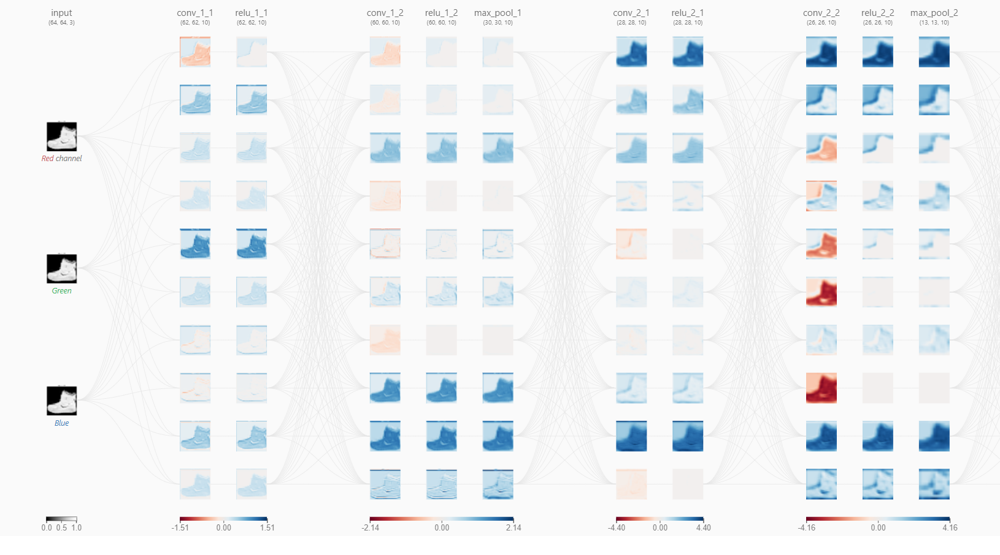
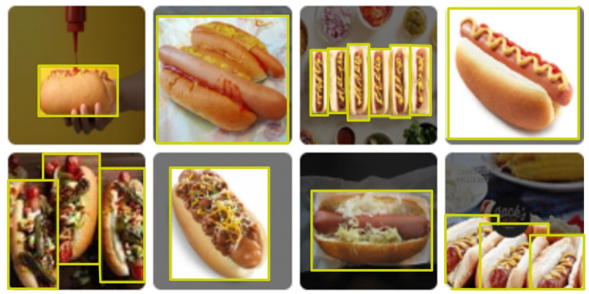
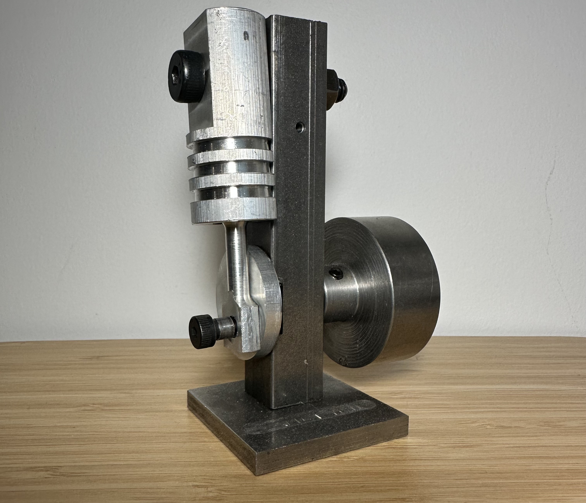

<!DOCTYPE html>
<html lang="en">
<head>
    <meta charset="UTF-8">
    <meta name="viewport" content="width=device-width, initial-scale=1.0">
    <title>My Portfolio</title>
    <link rel="stylesheet" href="css/style.css">
</head>
<body>
    <!-- Your content -->
    <script src="js/script.js"></script>
</body>
</html>

<!DOCTYPE html>
<html lang="en">
<head>
    <meta charset="UTF-8">
    <meta name="viewport" content="width=device-width, initial-scale=1.0">
    <title>My Portfolio</title>
    <link rel="stylesheet" href="css/style.css">
</head>
<body>
    <!-- Header Section -->
    <header>
        <h1>Jili You</h1>
        <nav>
            <a href="#about">About</a>
            <a href="#projects">Projects</a>
            <a href="#skills">Skills</a>
            <a href="#contact">Contact</a>
        </nav>
    </header>

    <!-- About Section -->
    <section id="about">
        <h2>About Me</h2>
        <p>Hello! I am a second-year mechanical engineering student at University of Toronto. I have a strong passion for Machine learning and automotive design.
             I enjoy I enjoy applying techinical knowledge and problem solving skills to solve real-life problems. Through my projects both in and outside class,
             I am proficient in Python, Pytorch, Solidworks. I am looking forward to applying my skills and passion to contribute to pioneering projects and 
             innovation in engineering design. </p>
    </section>
    <!-- project section -->
    <section id="projects">
        <h1>Projects</h1>
        <div class="slideshow-container">
            <!-- Project 1 -->
            <div class="slide">
                
                <div class="description">
                    <h2>Image Recognition Using CNNs</h2>
                    <p>This project showcases a concolutional neural network built using Pytorch. The model is trained on Fashion-MNIST, a pre-built 
                        dataset consisting of 70,000 images of different clothing categories such as shoes, dress and pants. Three different archtectures were implemented 
                        and image recognition accuracy is compared horizontally.Among all the neural network architecture implemented, the TinyVGG achieved the 
                        highest accuracy.  
                    </p>
                </div>
            </div>
            <!-- Project 2 -->
            <div class="slide">
                
                <div class="description">
                    <h2>Objection Detection Using Faster R-CNN</h2>
                    <p>I developed a computer vision model for hot dog detection in images using Pytorch implementing the Faster R-CNN archetecture.
                        The model was trained on a custom datasets in COCO format which recorded the positions of the hotdogs. The model demonstrated robust performance 
                        across various precision measuring metrics, highlighting its ability to detect hotdogs in different scenarios and its potential for further implication.</p>
                </div>
            </div>
            <!-- Project 3 -->
            <div class="slide">
                
                <div class="description">
                    <h2>Steering Wheel CAD</h2>
                    <p>As a member of University of Toronto Super Milage design team, I cadded the steering wheel for the 2023 Urban Concept car using Solidworks.</p>
                </div>
            </div>
            <!-- Project 4 -->
            <div class="slide">
                
                <div class="description">
                    <h2>Basic Machining Course</h2>
                    <p>To grasp a better understanding of machining techinques, I participated in a course at George Brown College. In this course, I learned how to use
                        a mill, a drill press, and a lathe. Using the knowledge we learned, I machined a single piston with a functional slider crank. The piston is capable of 
                        operating by feeding compressed air into the block.
                    </p>
                </div>
            </div>  
            <!-- Navigation Buttons -->
            <a class="prev" onclick="changeSlide(-1)">&#10094;</a>
            <a class="next" onclick="changeSlide(1)">&#10095;</a>
        </div>
    </section>
    
    <!-- Skills Section -->
    <section id="skills">
        <h2>Skills</h2>
        <div class="skills-container">
            
            
            
            <!-- Add other logos -->
        </div>
    </section>
    

    <!-- Contact Section -->
    <section id="contact">
        <h2>Contact</h2>
        <p>Email: <a href=> jili.you@mail.utoronto.ca</a></p>
        <p>GitHub: <a href="https://github.com/to0ommy" target="_blank">GitHub</a></p>
    </section>

    <!-- Footer -->
    <footer>
        <p>© 2024 [Jili You]. All rights reserved.</p>
    </footer>
</body>
</html>
